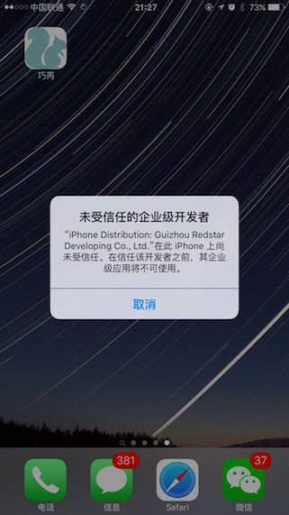
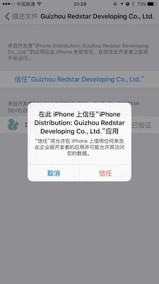
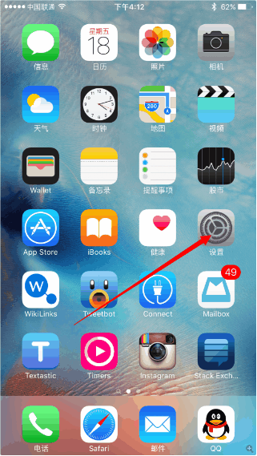

在 iOS 9 中运行企业版应用
在 iOS 9 中，苹果对企业签名的应用运行时，进行了更严格的限制。因此，在 iOS 9 中，企业签名后的应用安装好之后，是无法直接启动的。默认情况下，在 iOS 9 中运行一款企业签名的应用时，会弹出类似这样的提示：

可以看到，应用不再是像之前的版本那样直接启动，而是弹出了一个安全提示。此时，如果我们确认要运行的应用是安全的，可以按照以下步骤来设置：
在系统中打开 设置 - 通用 - 描述文件，此时，可以看到有一个和刚刚弹出的提示中文字类似的描述文件。然后，点击对应描述文件进入后，再点击按钮 信任，来让系统允许拥有这个证书的应用运行。如图所示：

之后，我们就可以回到桌面，重新运行刚才的应用，就会发现应用可以正常打开了。
完整的步骤，如下图所示：
